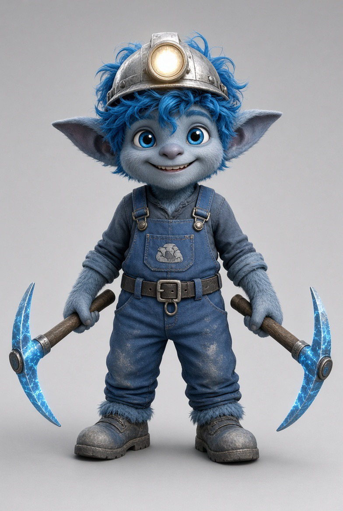
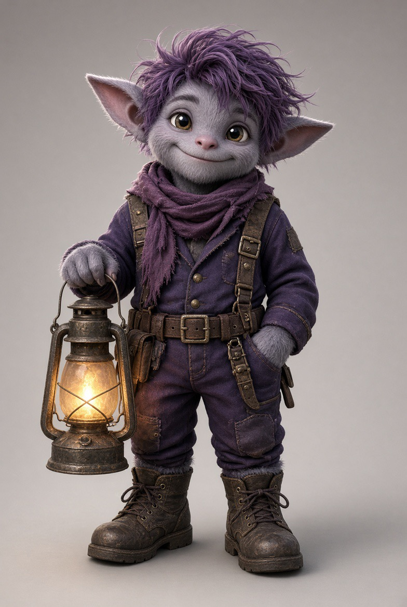

Osada pod Spodkiem




Dwie pierwsze misje demo. Ratujesz kundelki z familoków. Beboki nie giną — wracają mokre do szybu.
Szyb
12 beboków na wyjście. Ty jesteś brygadzistą.
Psi zaułek
Pusto. Czekają Burek, Lajka i Reks z rynku.
Komora Serca
0 / 2 odłamki. Ciemno.
Misja 2 otworzy się po wyprowadzeniu Burka i Lajki.
Pieski 0/2 · Wyjście 0 · Mokre 0